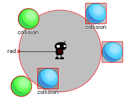

Der Kollisionskreis erstellt eine kreisförmige Zone des vom Benutzer angegebenen Radius um die Punkte x1, y1 und überprüft diese Zone dann auf Kollision mit einer beliebigen Instanz des Objekts, die durch das Argument "obj" angegeben wird. Diese Prüfung kann entweder präzise oder nicht, aber für eine genaue Kollisionen aktiviert sein werden, das Objekt oder die Instanz, die Sie für die Überprüfung müssen auch präzise Kollisionen für ihre Sprite aktiviert. Wenn nicht, basiert die Standardprüfung auf Begrenzungsrahmen. Das folgende Bild zeigt, wie das funktioniert: 
Hier in der Mitte wird ein Kollisionskreis verwendet, um nach Ballobjekten zu suchen. Nun versteht die blauen keine genauen Begrenzungsrahmen hat und wie Sie sehen können, auch wenn das Sprit nicht tatsächlich den Kreis berührt, kann die Kollision noch passieren (auch wenn Sie die genaue Option in der Funktion auf true gesetzt), wie die Der Begrenzungsrahmen dieses Sprites überlappt die durch collision_circle definierte kreisförmige Fläche. Auf der anderen Seite werden die grünen Kugeln nur dann als Kollision betrachtet, wenn das tatsächliche Sprite mit dem definierten Kreis überlappt. Um präzise Kollisionen zu berücksichtigen, müssen sowohl das Objekt-Sprite als auch die Kollisionsfunktion genau als aktiviert gekennzeichnet sein. Es sollte auch beachtet werden, dass der Rückgabewert der Funktion die ID einer der Instanzen sein kann, die als in Kollision betrachtet werden.
collision_circle(x1, y1, rad, obj, prec, notme);
| Streit | Beschreibung |
|---|---|
| x1 | Die x-Koordinate des Kreismittelpunkts, der geprüft werden soll. |
| y1 | Die y-Koordinate des Kreismittelpunkts, der geprüft werden soll. |
| rad | Der Radius (Abstand in Pixel von der Mitte zum Rand). |
| obj | Das Objekt, das auf Kollisionen geprüft werden soll. |
| prec | Ob die Prüfung auf pixelgenauen Kollisionen (true = langsam) oder generell auf dem Begrenzungsrahmen (false = fast) basiert. |
| notme | Ob die aufrufende Instanz ggf. ausgeschlossen werden soll ( true ) oder nicht ( false ). |
Instance id or noone
if collision_circle(x, y, 20, obj_Cursor, false,
true)
{
image_index = 1;
}
else image_index = 0;
Der obige Code prüft, ob ein kreisförmiger Bereich mit einem Radius von 20 Pixeln auf eine Kollision mit "obj_Cursor" geprüft ist. Wenn es einen gibt, wird der image_index des Objekts, auf dem der Code ausgeführt wird, auf 1 gesetzt. Wenn dies nicht der Fall ist, wird der image_index des Objekts gesetzt Objekt auf 0.